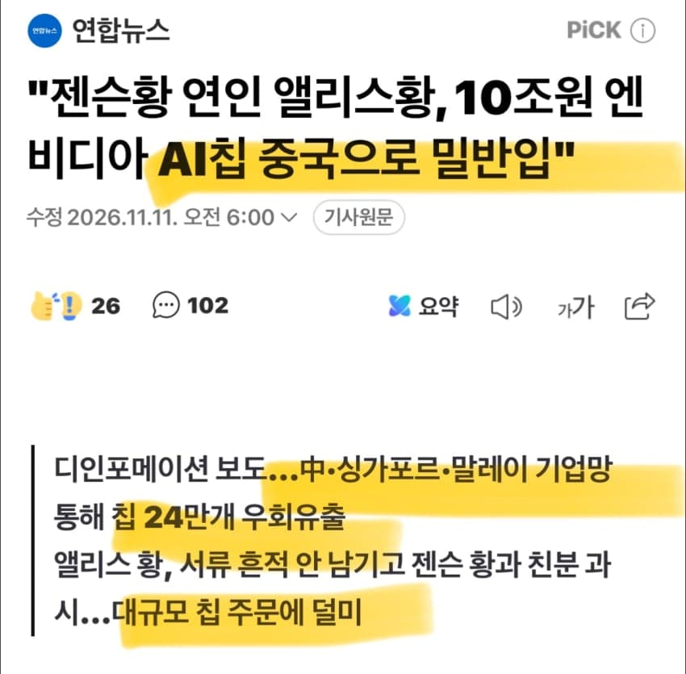
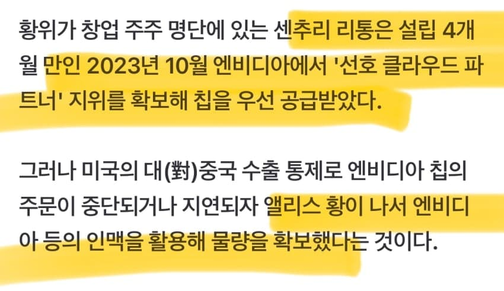

https://www.yna.co.kr/amp/view/AKR20261111006500091
미인(?)계에 당한 젠슨횽 ㅠㅠ


https://www.yna.co.kr/amp/view/AKR20261111006500091
미인(?)계에 당한 젠슨횽 ㅠㅠ
무도는 진짜 없는게 없네
이거 명수옹 빼꼼 나오는게 킬포인트임 ㅋㅋ
그래서 최근 중국ai가 발전한건가..
칩 다 막혔다더니 ai는 잘뽑길래 다들 어캐했나했는데ㅋㅋ
솔직히 저런거 들키기 전부터도 아무리봐도 중국 자체 기술력이나 성능 떡락한 칩으로는
학습속도 미국만큼 못 따라 올텐데 어떻게하지 싶었음 다 이유가 있던거였음
뭐 클로드에 기생한다는말은 들었는데 그것도 한계가있을텐데 하고 이상하다하긴했음ㅋ
첩으로 위장한 중국 정부의 연락관이었던거 같음
들키니까 간첩인줄 모르고 첩질했다고 둘러대는거지 5첩어치 칩이 어디로 흘러가는지도 몰랐다? 말이안됨
들키니까 리스크 관리 차원에서 모르고 첩질했다고 둘러댄거겠지
가능성 있을거같음 솔까 공급업자로서 중국시장 개 꿀통인데 어캐 포기함
5첩어칰ㅋㅋㅋㅋㅋ
그게 이미 단위가 된거냐고 ㅋㅋㅋㅋㅋ
실제로는 위자료가 9천억 수준이라서 55%나 떡락함
2조에서 9천억으로 줄여준 법관들은 1인당 100억씩은 받지 않았겠나 하는 의심이 들지 않냐?
세상에 ㅋㅋ
남편도 있었어??
이거보면 SK가 얼마나 현명하게 기업운영(?)하는지 알 수 있다
간첩보단 국첩이지
그래 국첩이 낫다
일단 조씹보이
걍 기업인으로서 트럼프 뒷배믿고 중국에 칩팔다 걸린거구만
와꾸가 아무리 생각해도 미인계는아니긴했어
또 중국이야? 에헤이 씹새들
240개도 아니고 24만개ㅋㅋ
읍읍 산업스파이 씹새끼들
미인계가 아니라 비지니스였네
그럼 어쨌든 ai 기술 패권은 여전히 미국이 압도적이라는 거네 ㄷㄷ
태원이형의 소신이 느껴지십니까
근데 진짜 전세계적으로 아직도 정보전 스파이가 ㅈㄴ많다고 느껴지긴하네 인터넷에 싸지르는 뻘글들도 그냥 렉카들반 스파이들반이긴 할거같은;;
첩칩첩
보지팔이의 한계는 어디인가
역시 화웨이 칩으로한건 아니었구나ㅋㅋ
같은 황씬데 동성동본 아니냐
근본없는쉑...
첩첩산중이네 ㅋㅋㅋ
젠승황은 이혼이 문제가 아니게된거네
별별 방법으로 침 사가겠지...
사랑한게 죄냐? 후...